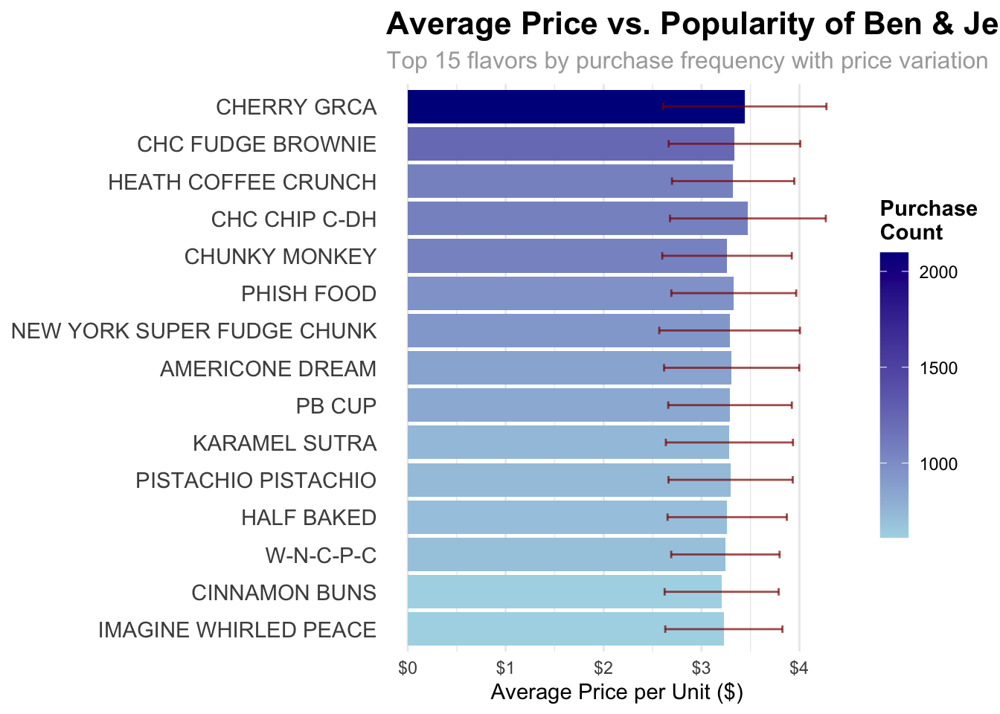
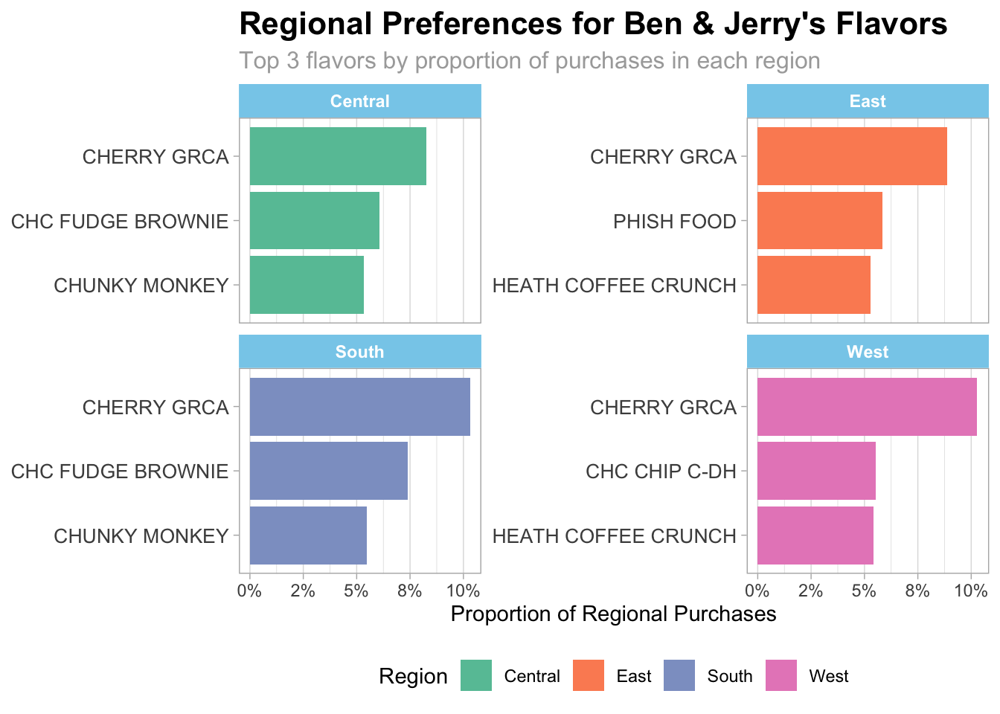
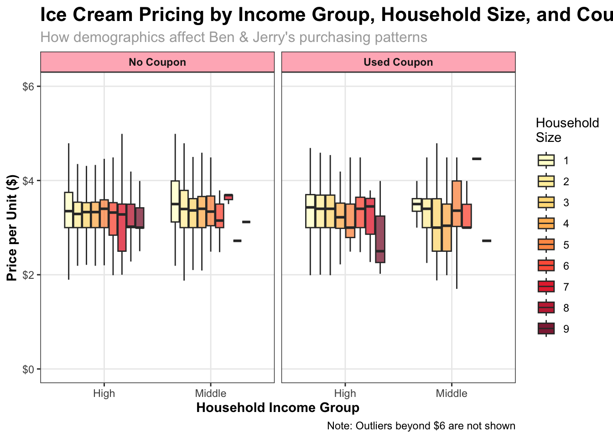

library(tidyverse)
library(ggplot2)
library(scales)Ben & Jerry’s Ice Cream
Load Necessary Library
Loading the Data
ice_cream <- read_csv('https://bcdanl.github.io/data/ben-and-jerry-cleaned.csv')
print(ice_cream)# A tibble: 21,974 × 17
priceper1 flavor_descr size1_descr household_id household_income
<dbl> <chr> <chr> <dbl> <dbl>
1 3.41 CAKE BATTER 16.0 MLOZ 2001456 130000
2 3.5 VAN CARAMEL FUDGE 16.0 MLOZ 2001456 130000
3 3.5 VAN CARAMEL FUDGE 16.0 MLOZ 2001456 130000
4 3 W-N-C-P-C 16.0 MLOZ 2001637 70000
5 3.99 AMERICONE DREAM 16.0 MLOZ 2002791 130000
6 3.89 ONE CSK BROWNIE 16.0 MLOZ 2002791 130000
7 3.89 PUMPKIN CSK 16.0 MLOZ 2002791 130000
8 2.14 CHC ALMOND NOUGAT 16.0 MLOZ 2001878 110000
9 3.5 PISTACHIO PISTACHIO 16.0 MLOZ 2002721 210000
10 3 PISTACHIO PISTACHIO 16.0 MLOZ 2002721 210000
# ℹ 21,964 more rows
# ℹ 12 more variables: household_size <dbl>, usecoup <lgl>, couponper1 <dbl>,
# region <chr>, married <lgl>, race <chr>, hispanic_origin <lgl>,
# microwave <lgl>, dishwasher <lgl>, sfh <lgl>, internet <lgl>, tvcable <lgl>Summary Statistics For Key Variables
summary(ice_cream %>% select(priceper1, household_income, household_size)) priceper1 household_income household_size
Min. :0.000 Min. : 40000 Min. :1.000
1st Qu.:3.000 1st Qu.: 80000 1st Qu.:2.000
Median :3.340 Median :110000 Median :2.000
Mean :3.315 Mean :125291 Mean :2.456
3rd Qu.:3.590 3rd Qu.:170000 3rd Qu.:3.000
Max. :9.480 Max. :310000 Max. :9.000 Price Analysis Across Flavors
# Calculate average price and count for each flavor
flavor_analysis <- ice_cream %>%
group_by(flavor_descr) %>%
summarize(
avg_price = mean(priceper1, na.rm = TRUE),
count = n(),
sd_price = sd(priceper1, na.rm = TRUE)
) %>%
filter(count > 50) %>% # Focus on flavors with sufficient data
arrange(desc(count))
# Display top flavors by purchase count
head(flavor_analysis, 10)# A tibble: 10 × 4
flavor_descr avg_price count sd_price
<chr> <dbl> <int> <dbl>
1 CHERRY GRCA 3.44 2097 0.833
2 CHC FUDGE BROWNIE 3.34 1235 0.672
3 CHC CHIP C-DH 3.47 1070 0.796
4 HEATH COFFEE CRUNCH 3.32 1070 0.625
5 CHUNKY MONKEY 3.26 1064 0.662
6 PHISH FOOD 3.33 968 0.638
7 NEW YORK SUPER FUDGE CHUNK 3.29 932 0.718
8 AMERICONE DREAM 3.31 865 0.690
9 PB CUP 3.29 828 0.631
10 KARAMEL SUTRA 3.28 738 0.649Plot 1: Price vs. Popularity of Top Flavors
# Create plot for top 15 flavors showing price vs popularity
flavor_analysis %>%
top_n(15, count) %>%
ggplot(aes(x = reorder(flavor_descr, count), y = avg_price, fill = count)) +
geom_col() +
geom_errorbar(aes(ymin = avg_price - sd_price, ymax = avg_price + sd_price),
width = 0.2, color = "darkred", alpha = 0.7) +
coord_flip() +
scale_fill_gradient(low = "lightblue", high = "darkblue") +
scale_y_continuous(labels = dollar_format()) +
labs(
title = "Average Price vs. Popularity of Ben & Jerry's Flavors",
subtitle = "Top 15 flavors by purchase frequency with price variation",
x = NULL,
y = "Average Price per Unit ($)",
fill = "Purchase\nCount"
) +
theme_minimal() +
theme(
plot.title = element_text(face = "bold", size = 16),
plot.subtitle = element_text(size = 12, color = "darkgrey"),
axis.text.y = element_text(size = 11),
panel.grid.major.y = element_blank(),
legend.position = "right",
legend.title = element_text(face = "bold")
) +
guides(fill = guide_colorbar(barwidth = 1, barheight = 10))
- This visualization reveals both the popularity and pricing strategy of Ben & Jerry’s top flavors.
- CHERRY GRCA and CHC CHIP C-DH appear to be among the most purchased flavors, though there’s significant price variation as shown by the error bars.
Regional Preferences Analysis
# Calculate regional preferences
regional_preferences <- ice_cream %>%
filter(!is.na(region)) %>%
group_by(region, flavor_descr) %>%
summarize(count = n(), .groups = "drop") %>%
group_by(region) %>%
mutate(proportion = count / sum(count),
rank_in_region = rank(-count, ties.method = "min")) %>%
filter(rank_in_region <= 5) %>%
arrange(region, rank_in_region)
# Display regional top flavors
regional_preferences %>%
select(region, flavor_descr, count, proportion, rank_in_region) %>%
mutate(proportion = scales::percent(proportion, accuracy = 0.1))# A tibble: 20 × 5
# Groups: region [4]
region flavor_descr count proportion rank_in_region
<chr> <chr> <int> <chr> <int>
1 Central CHERRY GRCA 403 8.2% 1
2 Central CHC FUDGE BROWNIE 297 6.1% 2
3 Central CHUNKY MONKEY 261 5.3% 3
4 Central CHC CHIP C-DH 249 5.1% 4
5 Central AMERICONE DREAM 236 4.8% 5
6 East CHERRY GRCA 405 8.9% 1
7 East PHISH FOOD 267 5.9% 2
8 East HEATH COFFEE CRUNCH 241 5.3% 3
9 East CHC FUDGE BROWNIE 207 4.5% 4
10 East CHC CHIP C-DH 201 4.4% 5
11 South CHERRY GRCA 693 10.3% 1
12 South CHC FUDGE BROWNIE 496 7.4% 2
13 South CHUNKY MONKEY 368 5.5% 3
14 South NEW YORK SUPER FUDGE CHUNK 332 4.9% 4
15 South HEATH COFFEE CRUNCH 318 4.7% 5
16 West CHERRY GRCA 596 10.3% 1
17 West CHC CHIP C-DH 322 5.5% 2
18 West HEATH COFFEE CRUNCH 315 5.4% 3
19 West NEW YORK SUPER FUDGE CHUNK 255 4.4% 4
20 West CHUNKY MONKEY 240 4.1% 5Plot2: Regional Flavor Preferences
# Select top 3 flavors per region for visualization
top_regional <- ice_cream %>%
filter(!is.na(region)) %>%
count(region, flavor_descr) %>%
group_by(region) %>%
mutate(prop = n / sum(n)) %>%
top_n(3, prop) %>%
ungroup()
# Create regional preferences plot
ggplot(top_regional, aes(x = reorder(flavor_descr, prop), y = prop, fill = region)) +
geom_col() +
facet_wrap(~ region, scales = "free_y", ncol = 2) +
coord_flip() +
scale_fill_brewer(palette = "Set2") +
scale_y_continuous(labels = percent_format(accuracy = 1)) +
labs(
title = "Regional Preferences for Ben & Jerry's Flavors",
subtitle = "Top 3 flavors by proportion of purchases in each region",
x = NULL,
y = "Proportion of Regional Purchases",
fill = "Region"
) +
theme_light() +
theme(
strip.background = element_rect(fill = "skyblue"),
strip.text = element_text(face = "bold"),
legend.position = "bottom",
panel.grid.major.y = element_blank(),
axis.text.y = element_text(size = 10),
plot.title = element_text(face = "bold", size = 16),
plot.subtitle = element_text(size = 12, color = "darkgrey")
) +
guides(fill = guide_legend(nrow = 1))
- This visualization shows how flavor preferences vary by region.
- Interestingly, while some flavors like CHERRY GRCA have broad appeal across regions, others show distinct regional popularity patterns.
Demographics and Purchasing Behavior
# Income group and average price analysis
income_price <- ice_cream %>%
filter(!is.na(household_income)) %>%
mutate(income_group = case_when(
household_income < 30000 ~ "Low",
household_income < 70000 ~ "Middle",
TRUE ~ "High"
)) %>%
group_by(income_group) %>%
summarize(
avg_price = mean(priceper1, na.rm = TRUE),
median_price = median(priceper1, na.rm = TRUE),
count = n(),
coupon_usage_rate = mean(usecoup == TRUE, na.rm = TRUE)
)
# Display income group summary
income_price %>%
mutate(coupon_usage_rate = percent(coupon_usage_rate, accuracy = 0.1))# A tibble: 2 × 5
income_group avg_price median_price count coupon_usage_rate
<chr> <dbl> <dbl> <int> <chr>
1 High 3.31 3.34 20211 10.5%
2 Middle 3.39 3.39 1763 12.5% Plot 3: Demographic Factors and Purchase Behavior
# Create demographic factors plot
ice_cream %>%
filter(!is.na(household_income), !is.na(household_size), !is.na(priceper1)) %>%
mutate(
income_group = case_when(
household_income < 30000 ~ "Low",
household_income < 70000 ~ "Middle",
TRUE ~ "High"
),
household_size = as.factor(household_size),
coupon_used = ifelse(usecoup == TRUE, "Used Coupon", "No Coupon")
) %>%
ggplot(aes(x = income_group, y = priceper1, fill = household_size)) +
geom_boxplot(alpha = 0.7, outlier.shape = NA) +
facet_wrap(~ coupon_used) +
scale_y_continuous(
limits = c(0, 6),
labels = dollar_format(),
name = "Price per Unit ($)"
) +
scale_fill_brewer(
palette = "YlOrRd",
name = "Household\nSize"
) +
labs(
title = "Ice Cream Pricing by Income Group, Household Size, and Coupon Usage",
subtitle = "How demographics affect Ben & Jerry's purchasing patterns",
x = "Household Income Group",
caption = "Note: Outliers beyond $6 are not shown"
) +
theme_bw() +
theme(
plot.title = element_text(face = "bold", size = 16),
plot.subtitle = element_text(size = 12, color = "darkgrey"),
legend.position = "right",
strip.background = element_rect(fill = "lightpink"),
strip.text = element_text(face = "bold"),
panel.grid.minor = element_blank(),
axis.title = element_text(face = "bold")
) +
guides(fill = guide_legend(override.aes = list(alpha = 0.9)))
- Higher income households tend to pay more for Ben & Jerry’s ice cream, regardless of coupon usage
- Larger households (4+ members) in the middle-income bracket show the widest price variation
- Coupon usage appears to effectively reduce prices across all income groups, but especially for middle-income households